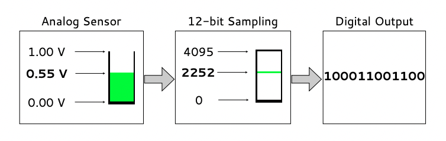

在回顾完上节课的核心内容后，老师播放了一段 CCD 芯片制作过程的视频：
整个工艺过程与电脑芯片的生产十分类似，详细内容可以观看视频。一个很重要的 insight是：一星半点的电路错误就会让整个 CCD 芯片报废，因此芯片越大，电路元件越多，出现缺陷的概率越大，良品率越低，因此对工艺要求更高，价格也就更贵。
1. Color filter arrays
在 Lecture 8 中的 Color Filter 一节中，我们介绍过每个像素上只能有一种颜色的 filter，那各种颜色在一个芯片上如何分布呢？这就是所谓的 color filter arrays，举例如下：
现在每个像素只能记录一种颜色的强度，如何能通过它来得到我们常见的 RGB 像素？业界的标准解决方案叫「Demosaicing」，就是在交界处将周围的单色像素合并成单个 RGB 像素，前者被称为原始像素 (raw pixels)，后者被称为有效像素 (effective pixels)。
上图中，色块对应原始像素，数字对应有效像素。在一个芯片上，有效像素与原始像素的数量差异就在四个边长上。在以前像素比较少的时候，相机芯片会标明二者的数量，现在已经不再标注。
还有一个很重要的细节在于「如何通过周围的原始像素合成有效像素」，因为图片中的物体和景观千变万化，很难找到一个「one-thing-fits-all」的解决方案，尤其是在颜色变化剧烈 (高频) 的部分，算法容易出现抖动。为了降低这种影响，芯片制造商通常会在像素的 microlens 之上再增加「low-pass filter」，在上面过滤高频信号，减少算法面临的挑战。

上图从左到右分别是：
- 原始图片
- 合成算法
- low-pass filter + 合成算法
可以看到放任「合成算法」的结果就是图中会出现很多意料之外的噪点；而增加「low-pass filter」可以大大减少噪点数量，但牺牲了图片的锐度。
2. Foveon X3
除了 CCD 之外，还有一种芯片叫 Foveon X3，与 color filter arrays 技术不同，Foveon X3 会利用「不同波长的光在硅中的吸收程度不同」的原理，在一个像素上同时捕捉 RGB 三种信号：
这种技术的难点在于在连续的光谱中界定 RGB 的范围，但它带来的好处十分明显：无需 low-pass filter 和像素合成算法，同时在高频信号的处理上表现得更加优雅：
图中 5D 代表 CCD，SD 14 代表 Foveon X3。
3. Contrast and dynamic range
在前面课程中提到的 dynamic range 指的是感光元件的最大 dynamic range，每张图片也拥有自己的 dynamic range。当画面的对比度较低时，dynamic range 较小：
表现出来就是像素集中在 histogram 的中间区域。我们可以可以通过增强对比度，提升 dynamic range，使画面颜色看起来更饱满：

但我们也不能一味地增加对比度，过度拉伸 histogram 可能会导致出现颜色断层：
就像小朋友如果身高长得太快，皮肤上就会出现生长纹。
4. Analog to digital converter (ADC)
芯片的作用说白了就是将模拟信号 (光) 转化成数字信号 (电)，如下图所示：
下图是 12-bit 采样的示例：

尽管采样是线性的，但人眼对光线强度的感受不是。从数字上来说，亮度越高，增加一倍所需增加的绝对值越大，如下图所示：
但由于相机会通过各种测光方案围绕中间灰成像，其结果就是大部分的采样值都在取值范围的前半段，直接使用这些值会使得图像过暗。因此，相机在成像前，会对原始的采样值做一次映射，将两边的取值往中间靠，如下图所示：
其实这个映射关系就是一种 tone curve。
5. Raw vs. JEPG
| RAW | JPEG | |
|---|---|---|
| Bit Depth | 10-, 12-, 14-BIT | 8-BIT |
| Tone Curve | not applied | applied |
| White Balance | not set | set |
| Compression | lossless | lossy |
| Portability | nonstandard | standard |
| Post-processing | required | optional |